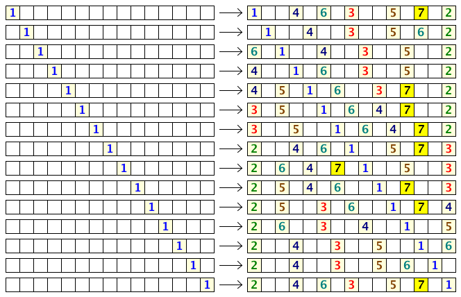

Comfortable Distance II
Problem 472
There are N seats in a row. N people come one after another to fill the seats according to the following rules:
- No person sits beside another.
- The first person chooses any seat.
- Each subsequent person chooses the seat furthest from anyone else already seated, as long as it does not violate rule 1. If there is more than one choice satisfying this condition, then the person chooses the leftmost choice.
Note that due to rule 1, some seats will surely be left unoccupied, and the maximum number of people that can be seated is less than N (for N > 1).
Here are the possible seating arrangements for N = 15:

We see that if the first person chooses correctly, the 15 seats can seat up to 7 people.
We can also see that the first person has 9 choices to maximize the number of people that may be seated.
Let f(N) be the number of choices the first person has to maximize the number of occupants for N seats in a row. Thus, f(1) = 1, f(15) = 9, f(20) = 6, and f(500) = 16.
Also, ∑f(N) = 83 for 1 ≤ N ≤ 20 and ∑f(N) = 13343 for 1 ≤ N ≤ 500.
Find ∑f(N) for 1 ≤ N ≤ 1012. Give the last 8 digits of your answer.